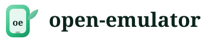

Install wizard
- Welcome
- Host
- License
- SDK
- Machine
- Shortcut
- Ads
- Done
Set up your mint machine
This wizard downloads the Android 11 guest, creates an isolated virtual machine, and can pin a desktop shortcut so you start like LDPlayer — one click, then tabs for every machine.
Look at this computer
KVM acceleration, RAM, and free disk decide how many isolated machines you can run at once.
Checking…
Android SDK License Agreement
The next step downloads the Android SDK, emulator, and system image straight from Google's servers. This app never bundles or redistributes them — that download is governed by Google's own license, not this project's.
By continuing you agree to the Android Software Development Kit License Agreement. In short: the SDK is licensed (not sold) to develop and run apps for the Android platform; you may not redistribute, sublicense, or bundle it; Google may change or discontinue parts of it.
Fetch the guest image
About 4 GiB the first time. Already-installed packages are skipped.
Waiting…
Create machine main
An isolated AVD with its own userdata disk. Later you can clone more machines from the tab bar.
Waiting…
Start from the desktop
Writes an application menu entry (and a Desktop icon if that folder exists) that launches this shell.
Free, with a few sponsor placements
This build is free and shows unobtrusive sponsor cards to stay that way — a rail beside the guest screen, a card while a machine boots, and an optional Game Center panel of app offers. Never anything covering the guest screen itself. No third-party ad network runs inside this app — see why.
Prefer not to see them? Pick "I'd rather pay" — Pro removes every placement and the 2-machine cap, verified by a signed key that works fully offline.
Machines live in tabs
The top bar multiplexes isolated VMs. Use + to clone a new machine. The mint sidebar stays scoped to the active tab.